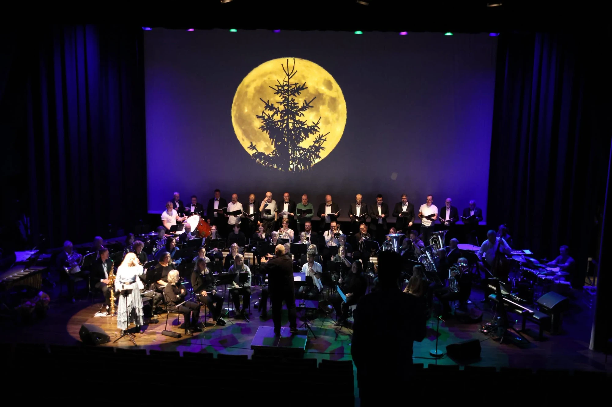
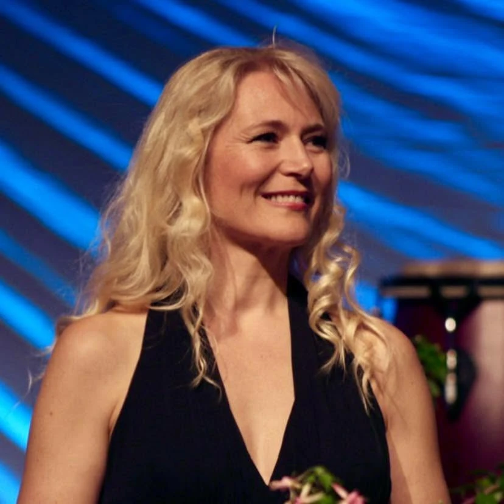
Sopran · solist · formidler
Marianne Juvik Sæbø
Neste konsert 21. februar 2027 · En nordisk aften · Bergen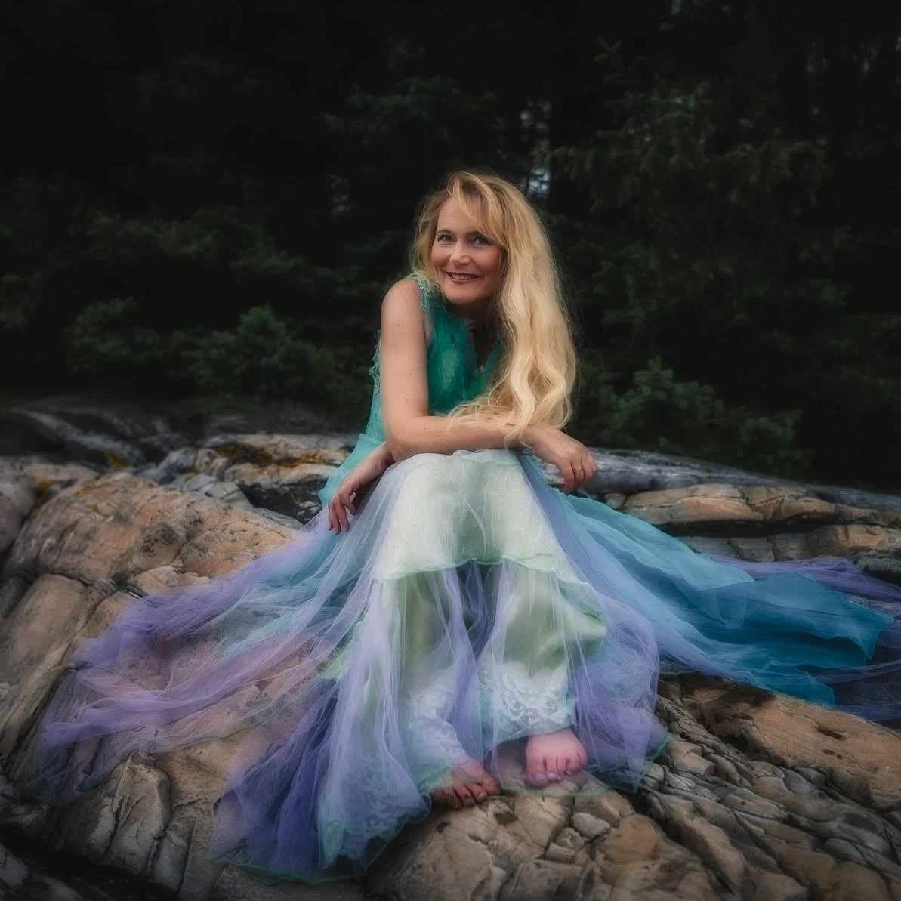
Om Marianne
Sopran og solist fra Askøy
En varm, erfaren og allsidig stemme til konserter, seremonier og anledninger der musikken skal bety noe.
Utdannet ved Griegakademiet og Royal Academy of Music i London. Med en varm, bærende stemme og et repertoar som spenner fra klassisk musikk, salmer og folketoner til jazz, musikal, gospel og opera, skaper hun øyeblikk publikum husker.
Marianne kan bookes til konserter, kirkelige seremonier, bryllup, begravelser, minnestunder, festivaler og private arrangementer – alene, med pianist eller sammen med kor og orkester.
2026 – 2027
Kommende konserter
-
21 Feb 2027Søndag
Kjøp billettEn nordisk aften
Universitetets Symfoniorkester · Bergen
Marianne er solist (sopran). Musikk av Sibelius, Lindberg, Grieg, Indrehus, Groven og Maia Husa Kaland. Dirigent Bjørn Breistein.
-
– Dato kommerPlanlegges
Les merÁLFR – en nordlyskonsert
Ny konsert planlegges
Tidligere fremført på Forum Scene Bergen og i KIPO på Askøy.
-
+ SnartFølg med
KontaktFlere konserter
Nye datoer legges ut her
En stemme med kraft og varme.
En formidler som får publikum til å lytte.
Aktuelt
Konserter du kan booke
Marianne har flere ferdige konsertprogrammer som kan settes opp på nye scener. Hun synger også sammensatte program der hun boltrer seg innen ulike sjangre som gospel, folketoner, salmer og viser.
-
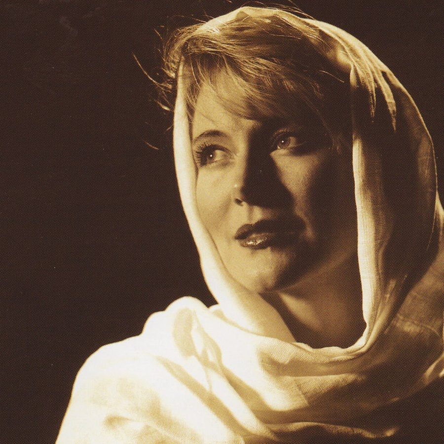
Maria Magdalena Les mer -
 Haugtussa
Mariannes egen sceniske versjon av Grieg og Garborgs Haugtussa, med samplede lyder fra naturen.
Les mer
Haugtussa
Mariannes egen sceniske versjon av Grieg og Garborgs Haugtussa, med samplede lyder fra naturen.
Les mer
-
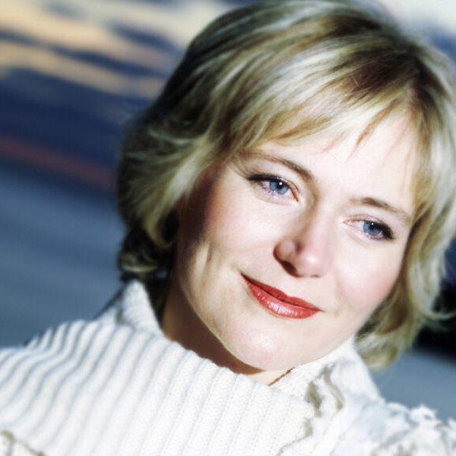
Ord og Draum Tekster av Olav H. Hauge og Jakob Sande, med musikk av Per Indrehus. Les mer -
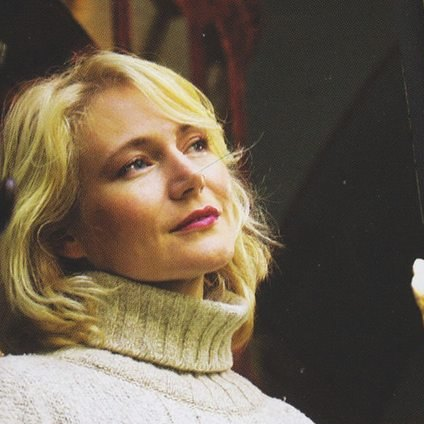
Arv En salmekonsert med mannskor og kammerorkester, eller med pianist og en blåser. Les mer
Musikk og utgivelser
Hør Marianne
Et utvalg innspillinger og musikkprosjekter. Lytt videre på Spotify.
-

-
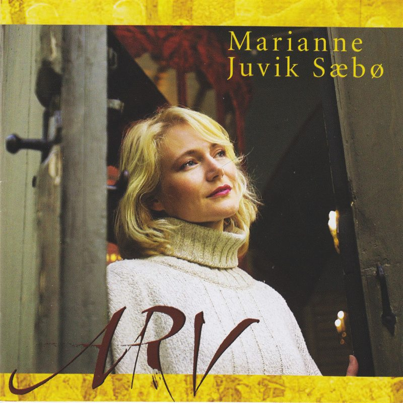
-
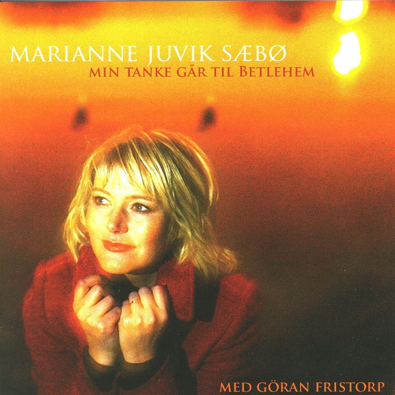
-

-

-

Se og hør Marianne
Video
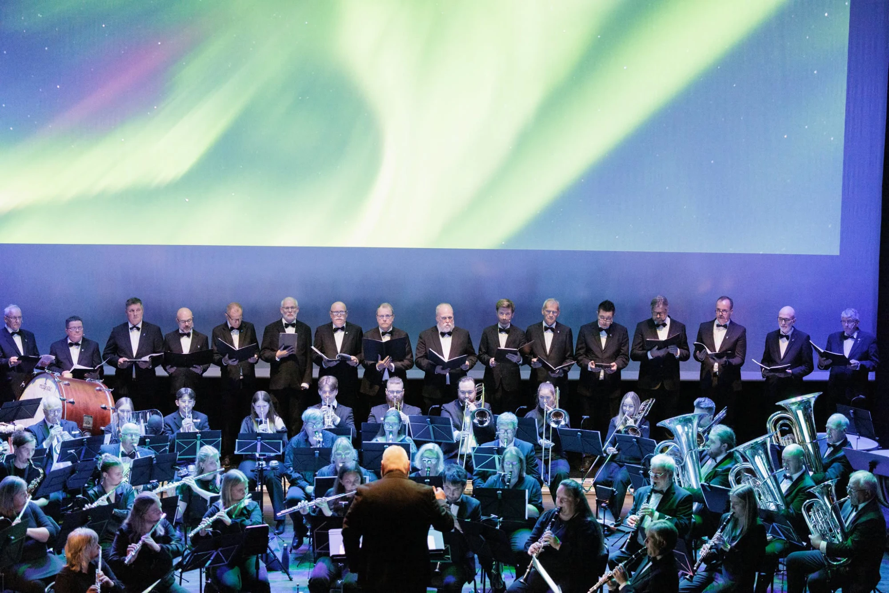
Promovideo
ÁLFR – en nordlyskonsert
Musikk møter bilder av nordlys og norsk natur.
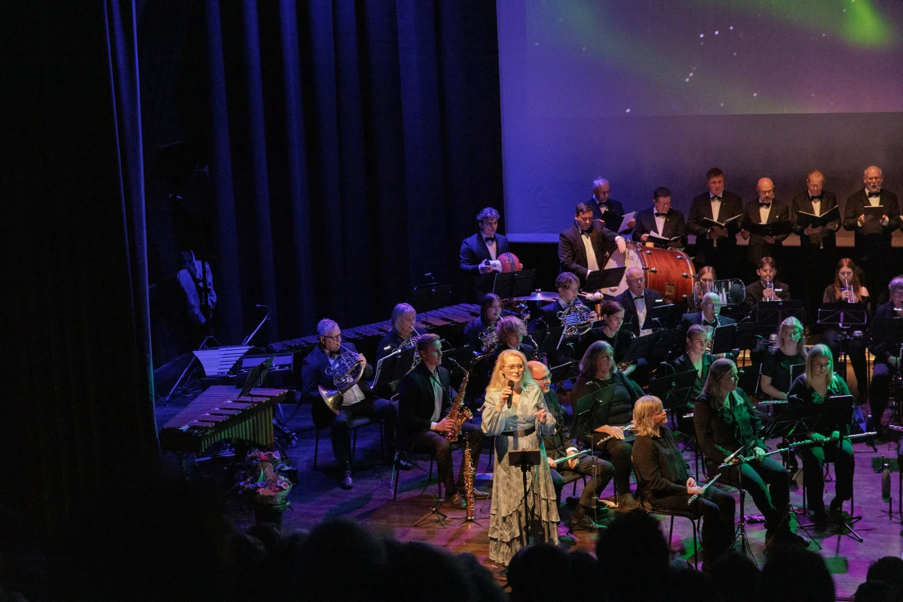
Live
Marianne live
Mariannes varme og sceniske nærvær.
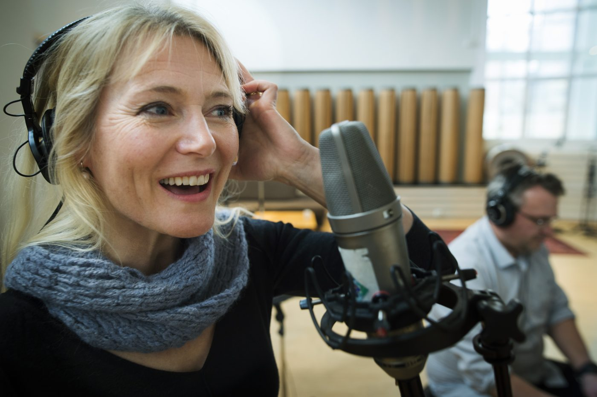
Innspilt i Rainbow Studio
Ei ørlita kvile
Promo for CD-en med Marianne og pianist Vidar Eldholm, gitt ut i 2016.
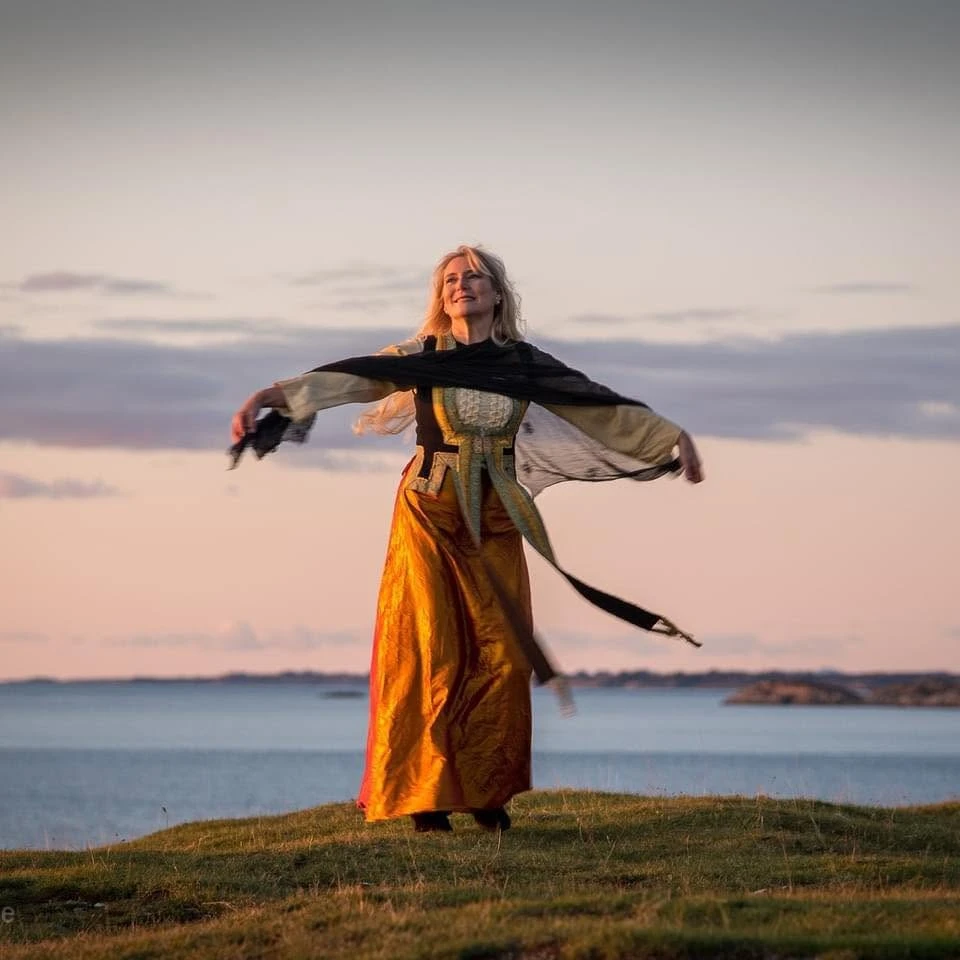
Booking
Kontakt
Book Marianne til konserter og seremonier.
Ta kontakt for sangoppdrag, konserter, seremonier, begravelser eller samarbeid.
- E-post
- mail@marianne.no
- Telefon
- 958 06 860
- Basert i
- Askøy, Norge